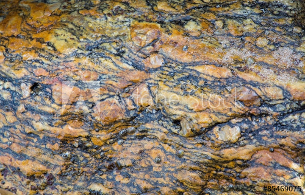
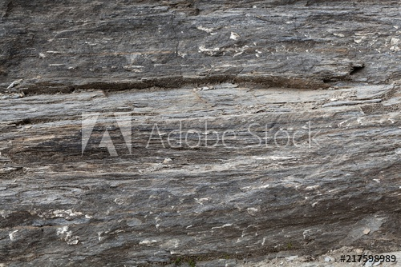

Den siste bergarten er omdannede- eller metamorfe bergarter. Denne bergarten blir kalt en omdannedbergart fordi den har blitt utsatt for så sterke påkjenninger at dens opprinnelige strukturen er forandre, den har blitt omdannet. Omdanning kan skje på to måter. Den ene er når jorskorpeplater kolliderer, kan lag av bergarter blir presset dypt ned under jordoverflata, da blir den opprinnelige bergarten omdannet. Den andre måten er når glødende magma trenger seg oppover i jordskorpa. Smeltemassen som brøyter seg oppover, varmer opp og smelter bergartene som ligger nærmest. Graden av omdanning av de opprinnelige bergartene avtar med økende avstand fra smeltemassene. Man kan gjenkjenne disse bergartene ved det stripete mønster.
 